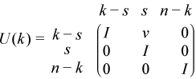
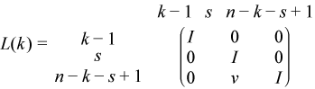

Intel® oneAPI Math Kernel Library Developer Reference - Fortran
Computes the bounded Bunch-Kaufman factorization of a complex Hermitian matrix.
call chetrf_rook( uplo, n, a, lda, ipiv, work, lwork, info )
call zhetrf_rook( uplo, n, a, lda, ipiv, work, lwork, info )
call hetrf_rook( a [, uplo] [,ipiv] [,info] )
The routine computes the factorization of a complex Hermitian matrix A using the bounded Bunch-Kaufman diagonal pivoting method:
if uplo='U', A = U*D*UH
if uplo='L', A = L*D*LH,
where A is the input matrix, U (or L ) is a product of permutation and unit upper ( or lower) triangular matrices, and D is a Hermitian block-diagonal matrix with 1-by-1 and 2-by-2 diagonal blocks.
This is the blocked version of the algorithm, calling Level 3 BLAS.
uplo |
CHARACTER*1. Must be 'U' or 'L'. Indicates whether the upper or lower triangular part of A is stored: If uplo = 'U', the array a stores the upper triangular part of the matrix A. If uplo = 'L', the array a stores the lower triangular part of the matrix A. |
n |
INTEGER. The order of matrix A; n≥ 0. |
a |
COMPLEX for chetrf_rook COMPLEX*16 for zhetrf_rook. Array a, size (lda,n). The array a contains the upper or the lower triangular part of the matrix A (see uplo). If uplo = 'U', the leading n-by-n upper triangular part of a contains the upper triangular part of the matrix A, and the strictly lower triangular part of a is not referenced. If uplo = 'L', the leading n-by-n lower triangular part of a contains the lower triangular part of the matrix A, and the strictly upper triangular part of a is not referenced. |
lda |
INTEGER. The leading dimension of a; at least max(1, n). |
work |
COMPLEX for chetrf_rook COMPLEX*16 for zhetrf_rook. Array work(*). work(*) is a workspace array of dimension at least max(1, lwork). |
lwork |
INTEGER. The size of the work array (lwork≥n). The length of work. lwork≥ 1. For best performance lwork≥n*nb, where nb is the block size returned by ilaenv. If lwork = -1, then a workspace query is assumed; the routine only calculates the optimal size of the work array, returns this value as the first entry of the work array, and no error message related to lwork is issued by xerbla. |
a |
The block diagonal matrix D and the multipliers used to obtain the factor U or L (see Application Notes for further details). |
work(1) |
If info = 0, on exit work(1) contains the minimum value of lwork required for optimum performance. Use this lwork for subsequent runs. |
ipiv |
INTEGER. Array, size at least max(1, n). Contains details of the interchanges and the block structure of D.
|
info |
INTEGER. If info = 0, the execution is successful. If info = -i, the i-th parameter had an illegal value. If info = i, Dii is exactly 0. The factorization has been completed, but the block diagonal matrix D is exactly singular, and division by 0 will occur if you use D for solving a system of linear equations. |
Routines in Fortran 95 interface have fewer arguments in the calling sequence than their FORTRAN 77 counterparts. For general conventions applied to skip redundant or reconstructible arguments, see LAPACK 95 Interface Conventions.
Specific details for the routine hetrf_rook interface are as follows:
a |
holds the matrix A of size (n, n) |
ipiv |
holds the vector of length n |
uplo |
must be 'U' or 'L'. The default value is 'U'. |
If uplo = 'U', thenA = U*D*UH, where
U = P(n)*U(n)* ... *P(k)U(k)* ...,
i.e., U is a product of terms P(k)*U(k), where k decreases from n to 1 in steps of 1 or 2, and D is a block diagonal matrix with 1-by-1 and 2-by-2 diagonal blocks D(k). P(k) is a permutation matrix as defined by ipiv(k), and U(k) is a unit upper triangular matrix, such that if the diagonal block D(k) is of order s (s = 1 or 2), then

If s = 1, D(k) overwrites A(k,k), and v overwrites A(1:k-1,k).
If s = 2, the upper triangle of D(k) overwrites A(k-1,k-1), A(k-1,k), and A(k,k), and v overwrites A(1:k-2,k-1:k).
If uplo = 'L', then A = L*D*LH, where
L = P(1)*L(1)* ... *P(k)*L(k)* ...,
i.e., L is a product of terms P(k)*L(k), where k increases from 1 to n in steps of 1 or 2, and D is a block diagonal matrix with 1-by-1 and 2-by-2 diagonal blocks D(k). P(k) is a permutation matrix as defined by ipiv(k), and L(k) is a unit lower triangular matrix, such that if the diagonal block D(k) is of order s (s = 1 or 2), then

If s = 1, D(k) overwrites A(k,k), and v overwrites A(k+1:n,k).
If s = 2, the lower triangle of D(k) overwrites A(k,k), A(k+1,k), and A(k+1,k+1), and v overwrites A(k+2:n,k:k+1).